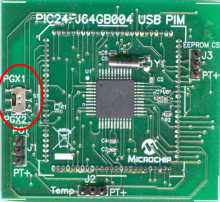
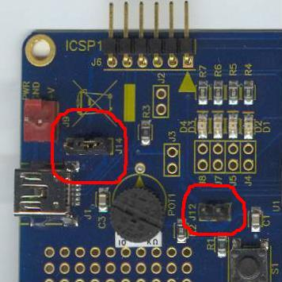
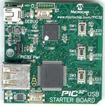
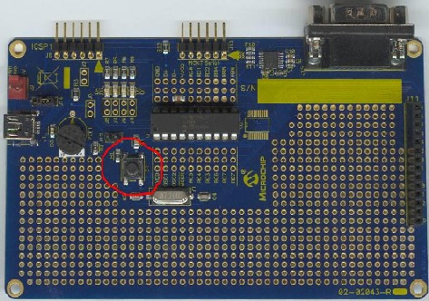

Getting Started: Running the “Device
– HID - Digitizer” demos
Configuration
1: PICDEM FS USB
Configuration
2: PIC18F87J50 PIM
Configuration
4: Low Pin Count USB Development Kit
Configuration
5: PIC24F Starter Kit 1
Configuration
6: PIC18F46J50 Full Speed USB Demo Board
Configuration
7: PIC32 USB Starter Board
Configuration
1: PICDEM FS USB
Configuration
2: PIC18F87J50 PIM
Configuration
4: Low Pin Count USB Development Kit
Configuration
5: PIC24F Starter Kit 1
Configuration
6: PIC18F46J50 Full Speed USB Demo Board
Configuration
7: PIC32 USB Starter Board
Required Hardware:
To run this project, you will need one of the
following sets of hardware:
Configuration 1: PICDEM FS USB
PICDEM
FS USB (DM163025)
Configuration 2: PIC18F87J50 PIM
PIC18F87J50
Plug-In-Module (PIM) (MA180021)
Configuration 3: Explorer 16
Explorer
16 (DM240001)
USB
PICtail™ Plus Daughter Card (AC164131)
And one of the following PIMs
PIC24FJ64GB004
Plug-In-Module (PIM) (MA240019)
PIC24FJ256GB110 Plug-In-Module (PIM) (MA240014)
PIC32MX USB Plug-In-Module (PIM) (MA320002)
Configuration 4: Low Pin Count USB Development Kit
Low
Pin Count USB Development Kit with PICKit 2
Debugger/Programmer (DV164126)
or without Debugger/Programmer (DM164127)
Configuration 5: PIC18F46J50 Full Speed USB Demo Board
PIC18F46J50
Full Speed USB Demo Board (MA180024)
Configuration 6: PIC32 USB Starter Board
PIC32 USB Starter Board (DM320003)
Configuring the Hardware:
This
section describes how to set up the various configurations of hardware to run
this demo.
Configuration 1: PICDEM FS USB
Configuration 2: PIC18F87J50 PIM + HPC Explorer
Configuration 4: Low Pin Count USB Development
Kit
Configuration 5: PIC18F46J50 Full Speed USB Demo Board
Configuration 6: PIC32MX USB Starter Board
Configuration 1: PICDEM FS USB
1)
If using the PICDEM FS USB Demo Board, no hardware related configuration or
jumper setting changes should be necessary.
The demo board need only be programmed with appropriate firmware.

Configuration 2: PIC18F87J50 PIM
1)
Short JP4 on the PIC18F87J50 PIM. This
allows the demo board to be powered through bus power.

2)
Short JP1 such that the “R” and “U” options are shorted.

Configuration 3: Explorer 16
1)
Before attaching the PIM to the Explorer 16 board, insure that the processor
selector switch (S2) is in the “PIM” position as seen in the image below.
.JPG)
2)
Short the J7 jumper to the “PIC24” setting
.JPG)
3)
Before connecting the PIM to the Explorer 16 board, remove all attached cables
from both boards. Connect the PIM to the
Explorer 16 board. Be careful when
connecting the boards to insure that no pins are bent or damaged during the
process. Also insure that the PIM is not
shifted in any direction and that all of the headers are properly aligned.
3a) If using the PIC24FJ64GB004 PIM, please
insure that the programming port switch is switched in the PGX1 direction.

4) On the USB PICTail Plus board, short jumper
JP1. Remove all other shorts on the
board.
.JPG)
5) Connect the USB PICTail Plus board to either
of the female PICTail Plus connectors or on the card edge connector (J9) at the
edge of the Explorer 16 board.
Note: When using the HID bootloader for PIC32, it is
important to modify the procdefs.ld file to relocate the sections of code that
will hold the bootloader and those sections that will hold the user
application. Example modified procdefs.ld
files have been provided with each project.
This file is currently named “Procdefs.ld.boot”. When using the example project with the
bootloader it is required to remove the “.boot” section of the file. This will allow MPLAB to use this file
instead of the default linker file. Once
the linker file is renamed, however, the project will no longer work without
the bootloader. Please rename the file
in order to get the project working again with PIC32.
Configuration 4: Low Pin Count USB Development Kit
1) Short pins 2 and 3 of J14. Make sure J12 is left open.

Configuration 5: PIC18F46J50 Full Speed USB Demo Board
1) Short JP3 to allow the board to
be powered from the USB.
.jpg)
Configuration 6: PIC32 USB Starter Board
No additional configuration is required for this board. The demo related USB traffic from the PIC32
is sent through the micro-AB connector on the bottom of the board.

To
run this project, you will need to load the corresponding firmware into the
devices. There are two methods available
for loading the demos: Precompiled demos and source code projects.
Precompiled
Demos are available in the “<Install Directory>\USB – Precompiled Demos”
folders. Each demo should be prefaced
with the hardware platform it is compiled for.
Select the file that matches the hardware that you have and the demo
that you want to run. For more
information about how to load a precompiled project, please see the “Getting
Started – Loading a precompiled demo” guide.
The
source code for this demo is available in the “<Install Directory>\USB
Device - HID – Digitizers\Multi Touch - Firmware” and “<Install
Directory>\USB Device - HID - Digitizers\Single Touch – Firmware”
directories. In these directories you
will find all of the user level source and header files as well as project and
workspace files for each of the hardware platforms. Find the project (*.mcp) or workspace (*.mcw) file that corresponds to the hardware platform you
wish to test. Compile and program the
demo code into the hardware platform.
For more help on how to compile and program projects, please refer to
the MPLAB® IDE help available through the help menu of MPLAB IDE
(Help->Topics…->MPLAB IDE).
Please
note that when using the C30 demo projects you will be required to select the
correct processor for the demo board.
1) Open the associated project file
2) In MPLAB Select
“Configure->Select Device”
3) In the device list box in the top
left corner of that window, select the desired device.
These
demos use the selected hardware platform as a USB HID class digitizer
device. The Single-Touch demo is a HID
class pen digitizer demo, which emulates a pen digitizer touch screen capable
of sensing a single contact point. The
Multi-Touch demo emulates a touch sensitive touch screen, capable of sensing
two simultaneous contact points. The
multi-touch demo can potentially be expanded to support additional simultaneous
contacts (by modifying the HID report descriptor), however, the standard built
in gestures that are recognized by the Microsoft Windows 7 platform only use
one or two contacts.
To
use the Single-Touch pen digitizer demo, plug the demo board into a free USB
port on a Windows Vista or Windows 7 machine.
The device should automatically enumerate as a HID class pen digitizer
device, and certain additional functions and capabilities built into the
operating system will become activated.
No manual USB driver installation is necessary, as the built in HID class
drivers are used for this device.
To
use the Multi-Touch digitizer demo, plug the demo board into a free USB port on
a Windows 7 machine. Windows 7 has
significantly more “Windows Touch” capabilities than
Since
the standard demo boards that these demos are meant to be run on do not have an
actual touch sensitive contact area, the firmware demos emulate the data that
would be generated by a real touch screen.
Both demo projects use a single user pushbutton. By pressing the button, the firmware will
send a flurry of USB packets to the host, which contain
contact position data that is meant to mimic an actual “gesture” of various
types. Each subsequent press of the
pushbutton will advance the internal state machine, and cause the firmware to
send a gesture to the PC.
To
use the demos, it is best to have Microsoft Internet Explorer installed on the
machine (although some demo functions can be observed using the pen flick
practice area available from the control panel). The latest versions of Internet Explorer
(when run on the proper OS: preferably Windows 7, but some function on Windows
Vista) supports recognition and use of certain basic gestures, such as “back”,
“forward”, as well as certain scroll and zoom operations. To see a full detailed description of how
best to use Internet Explorer or the pen flick practice area, see the detailed
comments at the top of SingleTouch.c file (for the Single Touch pen digitizer
demo: “<Install Directory>\USB Device - HID - Digitizers\Single Touch –
Firmware”). For details on how best to
use and what to expect with the multi-touch demo, see the detailed comments at
the top of the MultiTouch.c file (<Install
Directory>\ “USB Device - HID - Digitizers\Multi Touch – Firmware”).
Other
Info: Windows 7 adds support for Windows messages such as “WM_GESTURE” and
“WM_TOUCH”. These messages can be used
to help build customized “touch enabled” PC applications. Documentation for these messages can be found
in MSDN.
The
following Microsoft developer blog contains useful additional information
relating to Windows Touch:
http://blogs.msdn.com/e7/archive/2009/03/25/touching-windows-7.aspx
Below
are images highlighting which pushbutton is used by the digitizer demos:
PICDEM
FS USB:

PIC18F87J50
PIM:

Explorer
16:
.JPG)
Low pin count USB development kit:

PIC18F46J50 Full Speed USB Demo Board:
.jpg)
PIC32 USB Starter Kit: The demo uses switch “SW2”
(RD7). This is the middle button shown
in the below image. When pressing the
button, press and hold it down for at least one second.
Trademarks:
The Microchip name and logo, the Microchip logo,
MPLAB, and PIC are registered trademarks of Microchip Technology Incorporated
in the
PICDEM and PICTail are
registered trademarks of Microchip Technology Incorporated in the
Microsoft, Windows,
Windows Vista are either registered trademarks or trademarks of Microsoft
Corporation in the